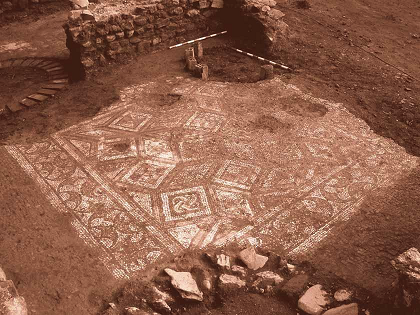

|
VILLA ROMANA DE ANTIOPA
 Foto: Villa romana Benagalbón. Turismo Rincón Victoria. Villa Antiopa fue descubierta en
1986, han pasado 36 años de excavaciones y puesta en valor. Declarada
Bien de Interés Cultural (BIC) en 2008. Una de las mejores villas romanas conservadas en Andalucía. La villa maritima data de finales del siglo III. El nombre de la villa proviene de Antiopa, princesa de Tebas que fue seducida por Zeus. Disfrazado de sátiro, Zeus se hizo llamar Satyr y este pasaje mitológico está representado en uno de los mosaicos, situado en el dormitorio. Esta singular villa romana de dos plantas, permite asomarse a las habitaciones privadas, los salones y los almacenes de 'garum', de lo que suponen los arqueólogos sería una familia de la nobleza de la época. A través es de un gran pasillo de 31,30m se vértebra la villa. 13 mosaicos, 142 piezas.....En el siglo V, el espacio fue cayendo en desuso y al final el edificio terminó ejerciendo de corral. En el VI, ya abandonado, los expoliadores arrasaron con mampostería, ladrillos y esculturas ornamentales. También hay materiales anteriores de época fenicia y posteriores de época nazarí.
Más Info: Villa-Antiopa
|